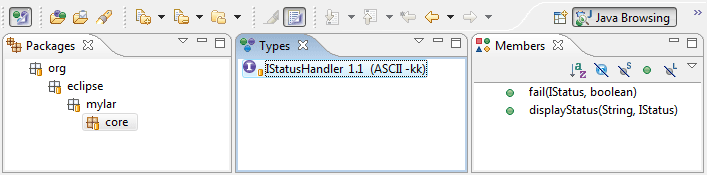

| Task-Focused UI |

|
|

|
| Task Repositories |
|
Team Support |
Task-Focused UI
Alt+Click navigation
When a view is in Focused mode, you can Alt+Click a node in order to temporarily show all of it's children.
- Once an element that was not interesting is selected with the mouse, the uninteresting elements will disappear.
- Alt+Right Arrow can be used instead of Alt+Click, but still requires a mouse selection of an element in order for the uninteresting elements to disappear.
- Alt+Click can be held down when drilling down from a top-level element, e.g. navigating from a project element with everything filtered right down to a method declaration.
- Multiple Alt+Clicks are supported, but as soon as a normal click is made uninteresting elements will disappear.
- Ctrl+clicks (i.e. disjoint selections, use Command key on Mac) are also supported and will cause each element clicked to become interesting. The first non Ctrl+click will cause uninteresting elements to disappear. Note that Ctrl+clicked element will become interesting (turn from gray to black) but only the most recently-clicked one will be selected while Alt is held down.
Automatically toggle focus on navigator views
For navigator views (
Package Explorer,
Project Explorer and
Navigator) the
Apply Mylyn button can be set to automatically toggle on with task activation and off with task deactivation. Note that the context-related preferences (including this one) are in
Preferences -> Mylyn -> Context.

Working Set integration
When Focus is applied to a navigator view the working sets filter for that navigator view will be disabled, ensuring that you see elements when working on elements that span working sets. In order to force only elements within one working set to show do the following:
- Set the view to show working sets as top-level elements.
- Use the
Go Into action on the popup menu of the working set node in the view to scope the view down to just the working set.
Focus the Java Browsing Perspective views
The leftmost toolbar button visible in the image below will toggle focus on the
Packages,
Types and
Members views of the
Java Browsing Perspective.

|
|

|
|
| Task Repositories |
|
Team Support |